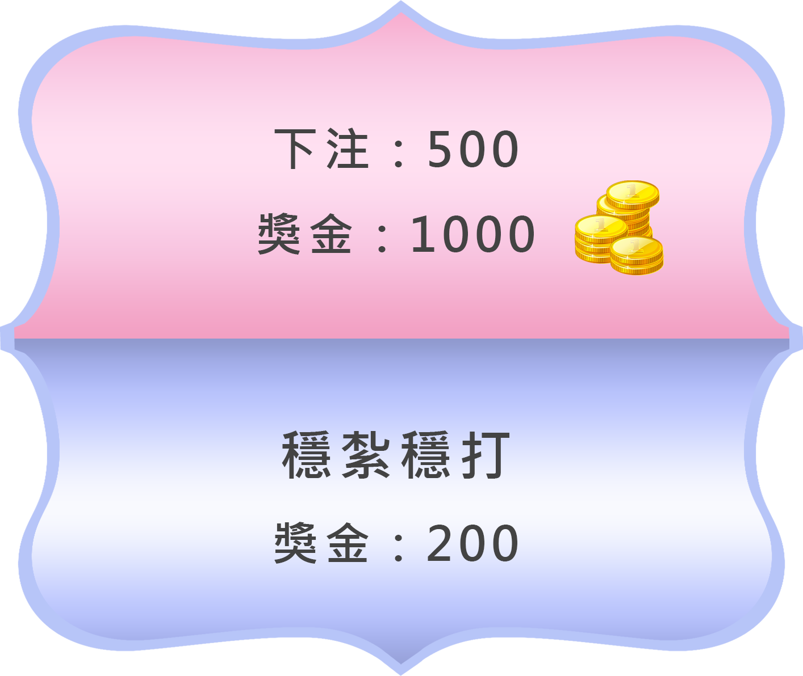

<div class="navbar">
  <div class="navbar-inner">
    <div class="left">
      <a href="#" class="link back" onclick="mainView.hideToolbar();$$('.page-content').css('padding-bottom', 0);">
        <i class="f7-icons color-white">chevron_left</i>
        <span>回上頁</span>
      </a>
    </div>
    <div class="center">{{site.name}}</div>
  </div>
</div>
<div class="pages navbar-through toolbar-fixed">
  <div data-page="itemDetail" class="page no-toolbar">
    <div class="page-content" style="background-color:#9E9E9E;">
      <div class="content-block" style="margin: 15px 0;">
        <div style="position: relative;">
           {{#if favorite}}
          <i class="f7-icons color-red detailHeart" style="font-size:25px;position:absolute;bottom:15px;right:15px; text-shadow: 0px 0px 8px white;" onclick='itemDetailRemove([{{favoriteSequence}}],{{site.id}});'>heart_fill</i> {{else}}
          <i class="f7-icons color-white detailHeart" style="font-size:25px;position:absolute;bottom:15px;right:15px; text-shadow: 0px 0px 8px white;" onclick='itemDetailAdd([{{favoriteSequence}}],{{site.id}});'>heart_fill</i> {{/if}}
        </div>
        <div class="content-block" style="margin: 5px 0;">
          <div class="content-block-inner">
            <p style="font-size: 18px;font-weight: bold;">{{site.name}}</p>
          </div>
          <div class="content-block-inner" id="site-content">{{site.content}}</div>
        </div>
      </div>
    </div>
    <div id="money-select-modal" class="custom-money-modal" style="z-index: 100;">
      <div class="custom-money-modal-content">
        
      </div>
    </div>
  </div>
</div>
